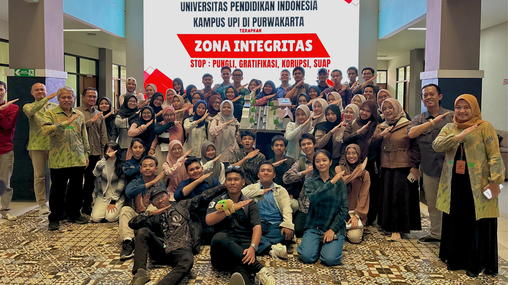

Berikut adalah beberapa project sederhana yang pernah atau sedang saya kerjakan.

Maket rumah yang dilengkapi dengan sistem Simple Door Alarm pada bagian pintu. Alarm akan berbunyi ketika pintu dibuka atau seseorang terdeteksi mendekati pintu sebagai peringatan sederhana untuk keamanan rumah.

Membuat maket lingkungan kampus yang dilengkapi dengan berbagai fitur teknologi pintar, seperti pendeteksi gempa, panel surya, dan lampu otomatis. Proyek ini merupakan simulasi penerapan teknologi untuk menciptakan lingkungan kampus yang lebih aman, efisien, dan modern.

Game bergenre Educational Adventure yang ditujukan untuk anak Sekolah Dasar. Game ini menggabungkan petualangan dan proses pembelajaran melalui berbagai tantangan di dalam permainan, sehingga kegiatan belajar menjadi lebih menarik dan interaktif.
Repository: Lihat di GitHub
| Ringkasan Portofolio Project | |||
|---|---|---|---|
| No. | Nama Project | Detail Project | |
| Teknologi | Status | ||
| 1 | Simple Door Alarm | Sensor, Buzzer | Selesai |
| 2 | Smart City | Sensor, Panel Surya | |
| 3 | Game | Godot | |
© 2026 Keisya Zakiyah Luthfiyah